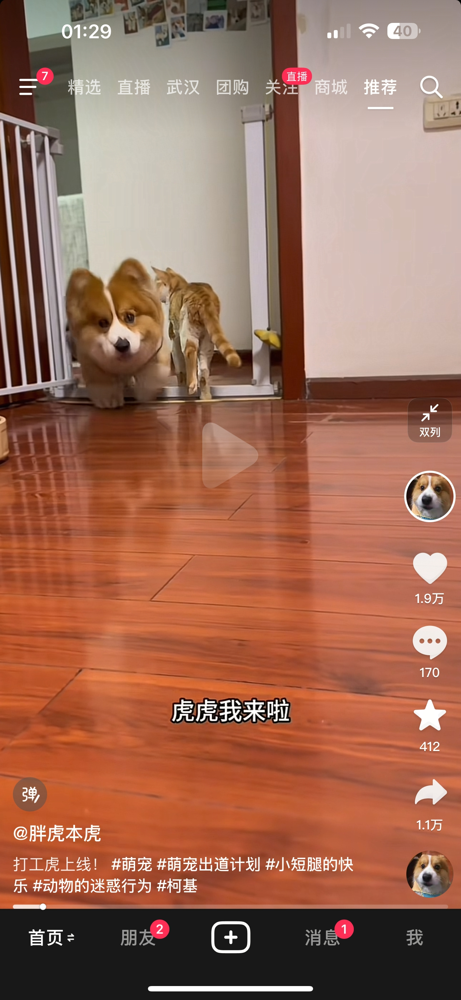
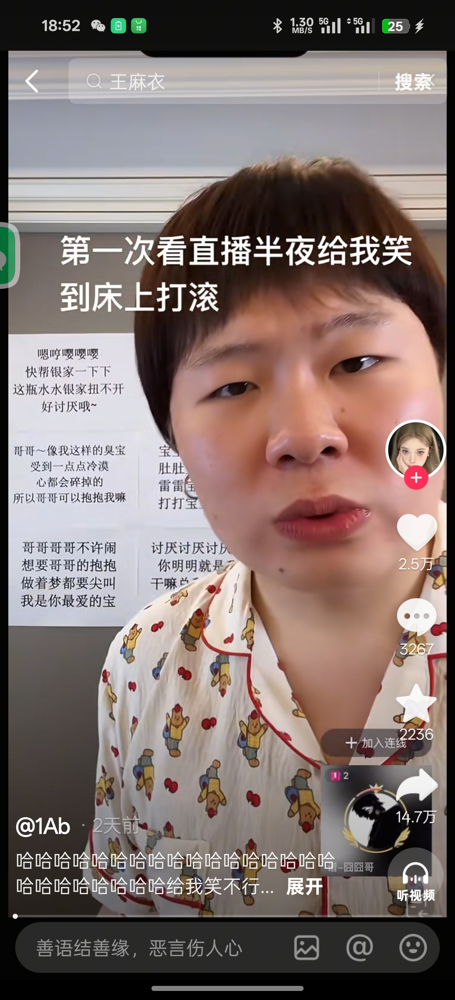
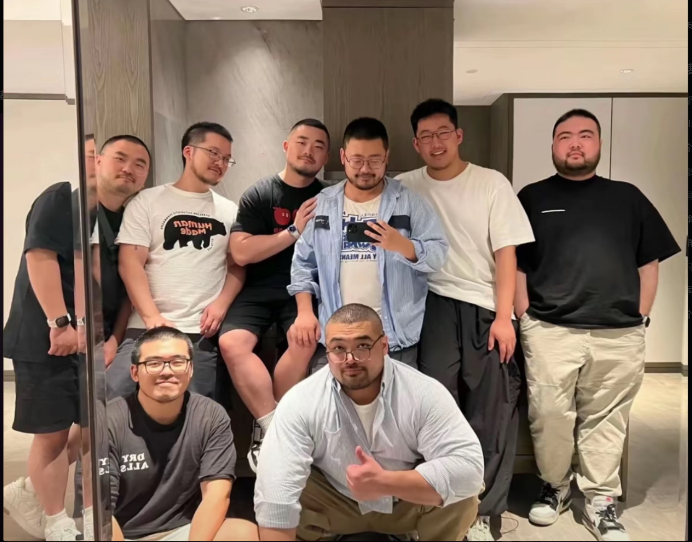
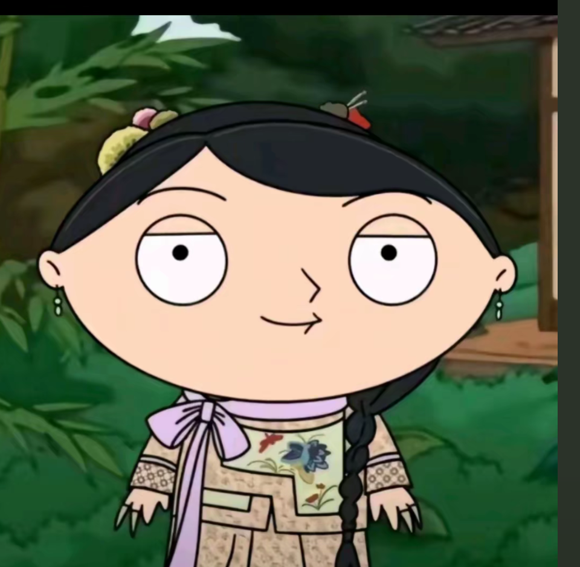
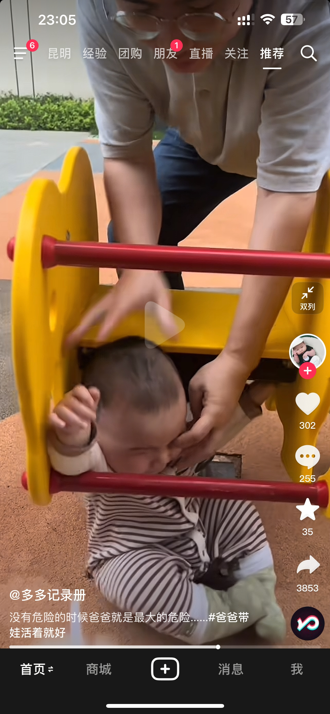

徐川傲，那是我们學校的噩梦。18年的時候把我們打得懷疑人生。[捂脸][捂脸]
能不能把德古拉带回来
没提前同事张晓松
这首歌是暑假工吗？[黑脸]
第一次见面你的开场白～[猪头]
发现泰国很喜欢用很悲伤的词配很甜的曲[黑脸]
原版真好听
有一个骂小三的泰文歌也超级好听，是个胖胖的母歌手唱的，不记得叫啥了
这么善良的人是怎么做到金融高层的
灯：跟不上了跟不上了[捂脸][捂脸][捂脸]
这对比！！[泪奔][泪奔][泪奔][泪奔]
duang大一只就走进来了[可怜]
为什么这个柯基宝宝感觉跟那些都不一样[紫薇别走]
这个看着好单纯，没有心眼子的感觉[色]
一辆柯基等于三只猫[看] 
虎虎是最好看的柯基了，别的柯基都尖嘴猴腮的，
虎虎好看，是因为他长得一点儿都不老蒯。[笑哭]
主人偏心，头像和抖音都是狗狗，没有猫猫[看]
到教室没大学生们[憨笑]
这是陆军吗？厉害啊，生了小孩还在服兵役[赞][赞][赞]
这个是你嘛[泣不成声]
第一眼以为孙千抢了谁家小孩来玩@孙千
高原战士发的那个视频就是你，难怪看的这么眼熟[干饭人][干饭人]
回来就结婚了啊[泣不成声]
你是怎么做到生了还这么瘦的啊[泪奔] 我生了后 就瘦不了了[泪奔] 和我现役时期完全就是两个人[泪奔]
我181CM，210斤，19岁那年去过锡林郭勒，我们在餐厅吃饭的时候，有几个路过的壮汉捏了捏我的胳膊跟我说，小伙子多吃点[泪奔]后来同行的本地朋友告诉我那些人是搏克手，这是我第一次知道搏克和那达慕大会
当初我的冤种内蒙朋友忽悠我 说去内蒙摔跤 就找这种 脖子上挂好多布条的 每输一次 就得挂一个 他是真拿我牲口整啊[尬笑]
你老爸如果沒案底，在大學的時候那可真不簡單。
猫：满不满我自己不知道吗？愚蠢的人就知道蛐蛐
谁有实况 什么都行[流泪]
好奇怪的歌呀 怎么会有人永远接受你的小脾气
听《绿色》的那批人现在都多大了啊[黑脸]
听过绿色还没成年的过来吧[黑脸]
听《绿色》和《你的酒馆对我打了烊》的那批人现在都多大了啊[憨笑][憨笑][憨笑][憨笑]
《绿色》和《你的酒馆对我打了烊》现在都多大了了 我猜15.16
那个时候我们长这样
《绿色》和《你的酒馆对我打了烊》听过的现在应该是16-25吧[黑脸][抱拳]
听过的应该都要发财长命百岁了吧
你这谁敢不认识你啊
几首歌基本没区别啊..........
OK，以后不喝屈臣氏苏打水了，不能资敌。
是她吗 
他怎么知道我是[发呆]
唱得哥哥心里飞上天了都[捂脸]
请我们几弟兄也喝几杯吧 
好像一位故人~
我怀疑我40多岁跟这小姑娘聊天她能把我聊成傻子[捂脸]
这个头发花白的老太太一出场，作为一个女人，我有一种心痛的感觉！江德福也是渣男一个。
那个时代给了男人很多抛弃包办媳妇的借口，女人成了封建婚姻的牺牲品！现在的人没有资格去批判张桂兰的错误
以前小，觉得张桂兰不好，现在觉得，很多人都欠她，她是为委屈的。那个年代一个女人在家，常年在家，不敢想！！只是为了生存，却在道德高点要求她太多，无非就是活
4年就能走完，其他医学生11年的路！[酷拽][酷拽][酷拽]
协和: 董同学合规[捂脸]
疑似拍摄成本[愉快]
多多格格吉祥 
戒烟！不要让孩子抽二手烟！！
萌死啦[呲牙][比心]
助眠时间到了莫？
这小子还下死手，抠人眼珠子干啥[呆无辜] 
我把他今天搞清楚了点
Read more: